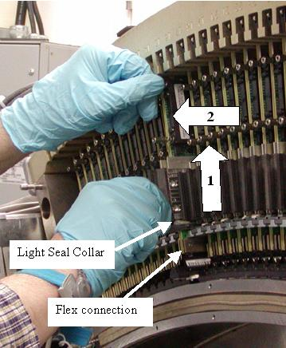

Illustration 9: Module Alignment pins

Module alignment notches on the Light seal collar and the pins at the other end of the board must clear the alignment slots to allow the module to slide out of the detector.
A digital cable screw can be held with the other hand to aid in guiding the module up and out if needed.
If the module does not seem to move up, check the digital cable. Make sure it is released from the backplane.
If the module seems to be stuck to the rail such that the flex connections are pulling up when the entire assembly is lifted up, STOP. Completely insert the Controlled Seating Tool (seen in Illustration 13) into the detector rails for that module. This will keep the module from hitting the detector collimator plates while you gently push up with a finger on the detector module front edge to release it from the detector rails. Remove the seating tool and continue to remove the module from the detector.
Illustration 8: Module removal

Illustration 9: Module Alignment pins
| NOTE: | After removing the module avoid touching the flex connection or detector module face. Hold the module by the heat sink or metal bracket on the opposite end of the of the assembly. |